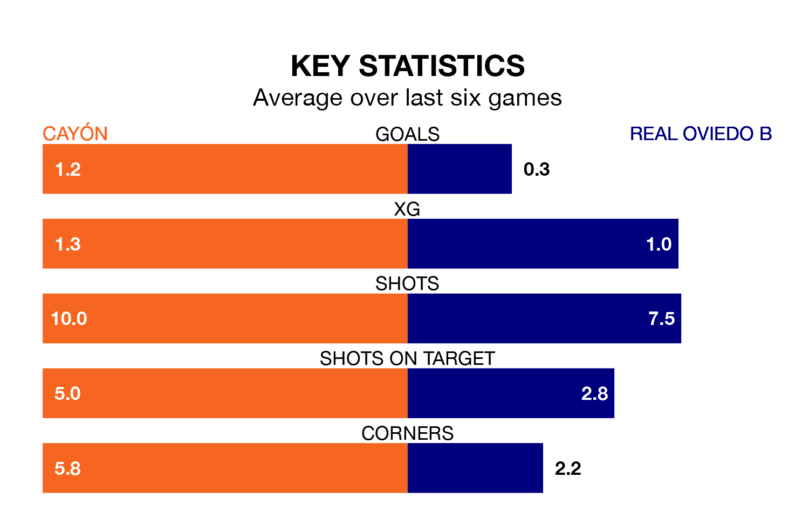

Real Oviedo B travel to the Warner Park Football Stadium looking to secure a first win in eight Segunda División RFEF Group 1 games against Cayón on Sunday.
Oviedo B have lost three and drawn four matches since they last earned three points – against Covadonga on December 2.
They face a Cayón side who have won two and drawn two over that time.
Oviedo B are 16th in the table after 21 games, of which they have won three and drawn 10, earning 19 points.
Cayón are two places ahead of the visitors in 14th, with four wins and eight draws putting them on 20 points.
With 17 goals in 21 games so far this season, Oviedo B are the league's joint-third-lowest scorers with 0.8 goals per game. And they are conceding more than average, letting in 26 goals at a rate of 1.2 per game.
The home team are also below average scorers, with 1.0 goal per game, compared to a league average of 1.1. They have conceded 1.4 goals per game.
Cayón's last match was on Sunday, a 4-1 loss against Pontevedra CF.
Oviedo B drew 1-1 with Langreo last time out, on February 3.
Updated: 11:18 (UTC), 08/02/24